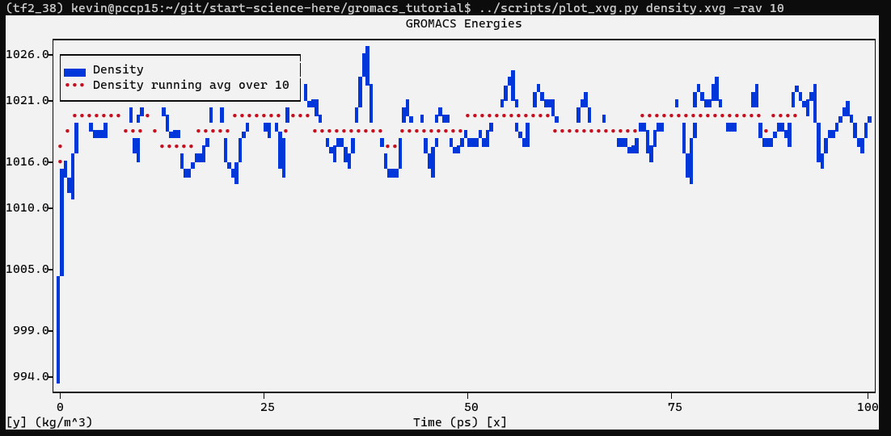

Equilibration Phase 2¶
The previous step, NVT equilibration, stabilized the temperature of the system. Prior to data collection, we must also stabilize the pressure (and thus also the density) of the system. Equilibration of pressure is conducted under an NPT ensemble, wherein the Number of particles, Pressure, and Temperature are all constant. The ensemble is also called the “isothermal-isobaric” ensemble, and most closely resembles experimental conditions.
The .mdp file used for a 100-ps NPT equilibration can be found here. It is not drastically different from the parameter file used for NVT equilibration. Note the addition of the pressure coupling section, using the Parrinello-Rahman barostat.
$ wget http://www.mdtutorials.com/gmx/lysozyme/Files/npt.mdp
A few other changes:
continuation = yes: We are continuing the simulation from the NVT equilibration phase
gen_vel = no: Velocities are read from the trajectory (see below)
We will call grompp and mdrun just as we did for NVT equilibration. Note that we are now including the -t flag to include the checkpoint file from the NVT equilibration; this file contains all the necessary state variables to continue our simulation. To conserve the velocities produced during NVT, we must include this file. The coordinate file (-c) is the final output of the NVT simulation.
$ gmx grompp -f npt.mdp -c nvt.gro -r nvt.gro -t nvt.cpt -p topol.top -o npt.tpr
$ gmx mdrun -deffnm npt
Let’s analyze the pressure progression, again using energy:
$ gmx energy -f npt.edr -o pressure.xvg
Type “18 0” at the prompt to select the pressure of the system and exit. The resulting plot should look something like the following:
$ python3 plot_xvg.py --help
$ python3 plot_xvg.py pressure.xvg -rav 10
Solution

The pressure value fluctuates widely over the course of the 100-ps equilibration phase, but this behavior is not unexpected. The running average of these data are plotted as the red line in the plot. Over the course of the equilibration, the average value of the pressure is 7.5 ± 160.5 bar. Note that the reference pressure was set to 1 bar, so is this outcome acceptable? Pressure is a quantity that fluctuates widely over the course of an MD simulation, as is clear from the large root-mean-square fluctuation (160.5 bar), so statistically speaking, one cannot distinguish a difference between the obtained average (7.5 ± 160.5 bar) and the target/reference value (1 bar).
Let’s take a look at density as well, this time using energy and entering “24 0” at the prompt.
$ gmx energy -f npt.edr -o density.xvg
Solution
{kind=link}
As with the pressure, the running average of the density is also plotted in red. The average value over the course of 100 ps is 1019 ± 3 kg m-3, close to the experimental value of 1000 kg m-3 and the expected density of the SPC/E model of 1008 kg m-3. The parameters for the SPC/E water model closely replicate experimental values for water. The density values are very stable over time, indicating that the system is well-equilibrated now with respect to pressure and density.
Note
I frequently get questions about why density values obtained do not match my results. Pressure-related terms are slow to converge, and thus you may have to run NPT equilibration slightly longer than is specified here.